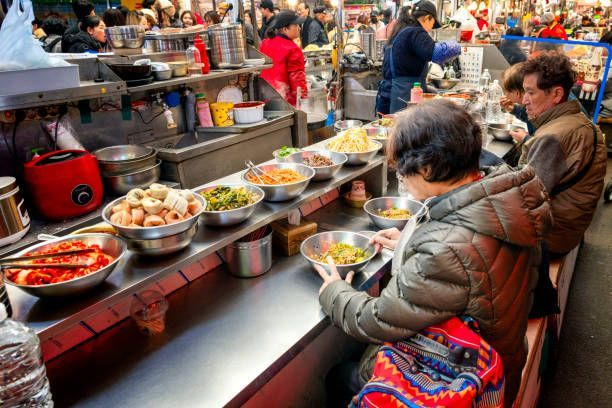

Celebrating Lunar New Year: Traditional Foods and Festivities

Lunar New Year is one of the most cherished holidays across Asia, marked by vibrant traditions, family gatherings, and symbolic foods. Whether you're honoring Korean customs or exploring broader Asian celebrations, food plays a central role in the festivities. If you're looking for a korean food mart florida , understanding the cultural significance of these dishes will help you celebrate meaningfully and deliciously. From tteokguk to dumplings, each dish carries centuries of symbolism and tradition.
Understanding Lunar New Year Across Asia
Lunar New Year is celebrated in many countries including Korea, China, Vietnam, and Malaysia. Though customs vary, the holiday universally represents renewal, prosperity, and family unity. It’s based on the lunar calendar, typically falling between late January and mid-February. The celebration often lasts several days, with each day dedicated to specific rituals and gatherings.
Origins and Cultural Importance
- Rooted in agricultural traditions and lunar cycles
- Celebrated for multiple days, often with public holidays
- Emphasis on honoring ancestors and starting the year fresh
- Shared values of health, wealth, and happiness
- Traditional greetings and blessings exchanged among family and friends
Common Themes and Traditions
- Cleaning homes to sweep away bad luck
- Wearing traditional clothing and exchanging gifts
- Hosting family feasts and performing rituals
- Using symbolic colors like red and gold for good fortune
- Lighting lanterns and fireworks to ward off evil spirits
Korean New Year Traditions (Seollal)
In Korea, Lunar New Year is known as Seollal. It’s a time for reflection, respect, and celebration. Families gather to honor ancestors, play traditional games, and enjoy a rich spread of holiday dishes. The holiday is deeply rooted in Confucian values and emphasizes family harmony and respect for elders.
Rituals and Customs
- Sebae: Children bow to elders and receive blessings and gifts
- Charye: Ancestral rites performed with a ceremonial table of food
- Hanbok: Traditional Korean attire worn during the holiday
- Yutnori: A board game played with four sticks, symbolizing luck and strategy
- Gift-giving: Often includes money in silk pouches and food baskets
Signature Dishes
- Tteokguk (rice cake soup): A must-have dish symbolizing aging and renewal
- Jeon (savory pancakes): Made with vegetables, seafood, or meat
- Galbijjim (braised short ribs): Rich and flavorful, often served at celebrations
- Kimchi and banchan: Essential side dishes that complete the meal
- Sikhye (sweet rice drink): Served as a dessert or digestive aid
Tteokguk – The Iconic New Year Dish
Tteokguk is more than just a soup—it’s a symbol of transformation. Eating it on New Year’s Day is believed to officially make you one year older in Korean culture. It’s a dish that combines simplicity with deep cultural meaning.
Cultural Significance
- White rice cakes represent purity and a fresh start
- The round shape of sliced garaetteok resembles coins, symbolizing wealth
- The dish is traditionally served in a clear beef broth with garnishes
- Eating tteokguk is a rite of passage into the new year
Traditional Recipe Breakdown
- Ingredients: Sliced garaetteok (rice cakes), beef brisket or anchovy broth, egg ribbons, seaweed strips, green onions
- Preparation: Simmer broth, add rice cakes, garnish with egg and seaweed
- Serving Tips: Serve hot with kimchi and optional dumplings (mandu)
- Variations: Some families add seafood or use chicken broth for a twist
- Regional Styles: Jeolla-style includes colorful garnishes, while Seoul-style is more minimalist
Other Asian New Year Foods
While Korean cuisine has its own unique traditions, other Asian cultures also celebrate Lunar New Year with symbolic dishes that reflect their values and heritage. These foods are not only delicious but also carry deep cultural meanings.
Chinese Lunar New Year
- Dumplings: Represent wealth and prosperity
- Longevity noodles: Symbolize long life
- Whole fish: Served for abundance
- Sticky rice cakes (nian gao): For rising success
- Spring rolls: Symbolize gold bars and wealth
Vietnamese Tết
- Bánh chưng: Square sticky rice cake with pork and mung beans
- Pickled vegetables: Cleanse the palate and aid digestion
- Boiled chicken: A staple for ancestral offerings
- Sweet treats: Coconut candies and sesame snacks
- Xôi (sticky rice): Often dyed in vibrant colors for celebration
Shared Ingredients and Symbolism
| Ingredient | Symbolism | Common Use Across Cultures |
|---|---|---|
| Rice | Nourishment, unity | Soups, cakes, pancakes |
| Noodles | Longevity | Stir-fries, soups |
| Fish | Abundance | Whole steamed or fried |
| Eggs | Fertility, rebirth | Garnishes, pancakes |
| Vegetables | Health, balance | Pickled, stir-fried, fresh |
| Sweets | Happiness, harmony | Candies, rice cakes |
These ingredients reflect shared values of prosperity, health, and happiness across Asian cultures.
Hosting a Lunar New Year Celebration
Planning a Lunar New Year gathering is a wonderful way to honor tradition and bring people together. Whether you're hosting a small dinner or a large event, thoughtful preparation makes all the difference. Celebrations can be traditional or modern, but the heart of the holiday remains the same.
Planning the Menu
- Include traditional dishes like tteokguk, dumplings, and rice cakes
- Offer vegetarian and gluten-free options for inclusivity
- Balance savory and sweet items for variety
- Use symbolic ingredients to reflect good fortune
- Prepare dishes in advance to reduce stress on the day
Decor and Atmosphere
- Decorate with red lanterns, gold accents, and traditional motifs
- Play cultural music or host storytelling sessions
- Set up a table for ancestral offerings or symbolic items
- Include games like yutnori or mahjong for entertainment
- Use candles and incense for ambiance and tradition
Where to Find Authentic Ingredients
Authentic ingredients are key to preparing traditional dishes. Korean grocery stores offer a wide range of staples, from rice cakes to sauces and ready-made banchan. Shopping locally supports community businesses and ensures freshness.
Korean Grocery Staples
- Garaetteok: Cylindrical rice cakes for tteokguk
- Kimchi: Fermented vegetables for side dishes
- Soy sauce, sesame oil, gochujang: Essential seasonings
- Meats and seafood: For soups and braised dishes
- Vegetables: Napa cabbage, green onions, radish
- Rice and noodles: Base ingredients for many dishes
Miami Kimchi’s Offerings
- Locally made kimchi and Korean pantry items
- Fresh rice cakes and pre-marinated meats
- Ready-to-eat banchan and sauces
- Online ordering and delivery options
- Visit their korean grocery hollywood florida page for store details and specials
- Seasonal promotions and holiday bundles available
Miami Kimchi makes it easy to prepare authentic Korean meals for your celebration.
Cultural Etiquette and Symbolism
Respecting cultural etiquette enhances the meaning of Lunar New Year. Understanding the dos and don’ts helps you celebrate with authenticity and grace. These customs vary slightly by region but share common values.
Dos and Don’ts During Lunar New Year
- Do clean your home before the holiday to sweep away bad luck
- Don’t clean or take out trash on New Year’s Day—it may remove good fortune
- Do wear bright colors, especially red and gold
- Don’t use negative language or argue during celebrations
- Do greet elders with bows or respectful phrases
- Don’t lend or borrow money on New Year’s Day
Symbolic Foods and Their Meanings
- Eggs: Fertility and new beginnings
- Rice cakes: Prosperity and unity
- Fish: Surplus and abundance
- Greens: Wealth and vitality
- Sweet treats: Happiness and harmony
- Mandarins: Luck and fortune
These symbols add depth to your celebration and connect you to centuries of tradition.
Conclusion
Lunar New Year is a time to honor heritage, share joy, and welcome new beginnings. Whether you're preparing tteokguk for Seollal or hosting a multi-cultural feast, the food and customs you choose reflect your respect for tradition and your hope for the future. Miami Kimchi is proud to support your celebrations with authentic ingredients and cultural insight. For more information or to explore their offerings, visit the Contact Us page and connect with their team.
-
What is the significance of tteokguk during Korean New Year?
Tteokguk symbolizes aging and renewal. Eating it on New Year’s Day is believed to officially make you one year older in Korean culture.
-
Can I find rice cakes and Korean ingredients in Florida?
Yes, Miami Kimchi offers fresh rice cakes, kimchi, and other Korean staples through their Florida locations and online store.
-
What are some vegetarian options for Lunar New Year?
Vegetarian jeon (pancakes), vegetable dumplings, and tofu-based dishes are great options that still honor tradition.
-
How do different Asian cultures celebrate Lunar New Year?
While customs vary, most cultures share themes of family, prosperity, and symbolic foods like rice cakes, dumplings, and noodles.
-
Is it okay to mix traditions from different cultures in one celebration?
Absolutely. Many modern celebrations blend Korean, Chinese, and Vietnamese customs to create inclusive and meaningful experiences.
< Older Post
Newer Post >
Shop these ingredients at Kimchi Mart
Six stores across South Florida — or order online and pick up in an hour.